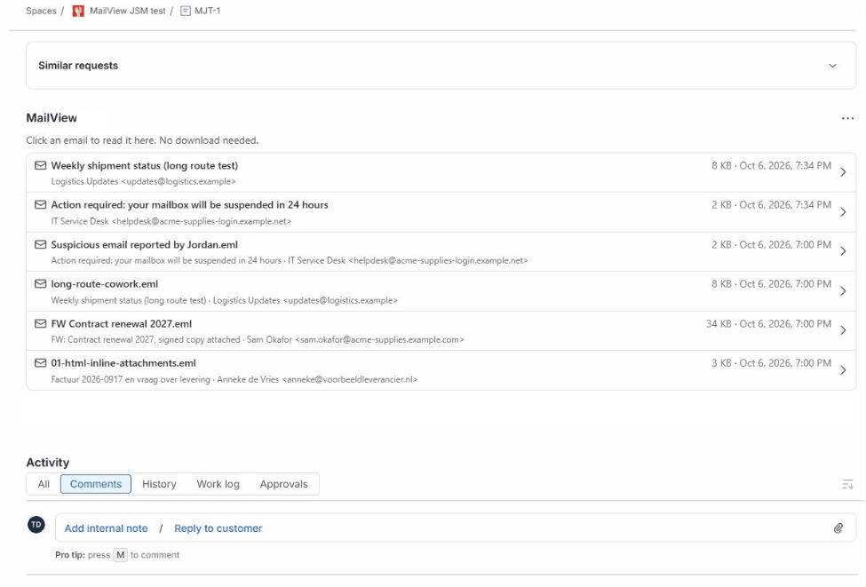

For Solution Partners
The email attachment problem your JSM customers already have
Jira Cloud shows uploaded .eml files as raw text and .msg files as code. It comes up in phishing-report desks, Outlook-heavy customers and after Data Center migrations. MailView fixes it on the work item, and you can test it on a demo site in a minute.

What it does
- Lists the .eml and .msg attachments on a work item and shows the one you click: sender, recipients, formatting, inline images, the files inside.
- Gives a plain-English verdict for suspicious mail: SPF, DKIM and DMARC results, lookalike domains, links whose text points somewhere else, risky attachments. A "Copy findings" button puts a defanged summary in the clipboard for the ticket comment.
- Works in Jira and in the Jira Service Management agent view. Handles .msg files that only carry RTF and forwarded emails attached without a file extension.
- Runs on Atlassian: the email is read from the attachment in the user's browser with the user's own permissions. Nothing is stored or sent anywhere. Scripts, remote images and tracking pixels are blocked.
Try it on a demo site
MailView is submitted to the Atlassian Marketplace and in review. Once it is listed, installing it on any Jira Cloud site you use for demos takes a minute: open a work item with an .eml or .msg attachment and the MailView panel is there. No configuration, no account with us. Pricing is on the listing.
When it fits a customer project
A service desk that receives forwarded or reported emails. A migration from Data Center or another tool that brings years of .msg files along. A security team that triages "is this legit?" tickets in JSM. For one email a month, downloading is fine; for a queue of them, a viewer on the work item saves the round-trip to Outlook and keeps suspicious mail out of it.
Questions from partners
Missing a feature a customer needs, or want a walkthrough? Email support@dortus.com. We are a small, independent Marketplace Partner and answer ourselves.